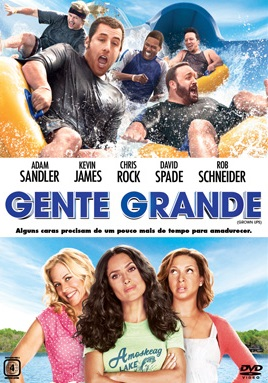
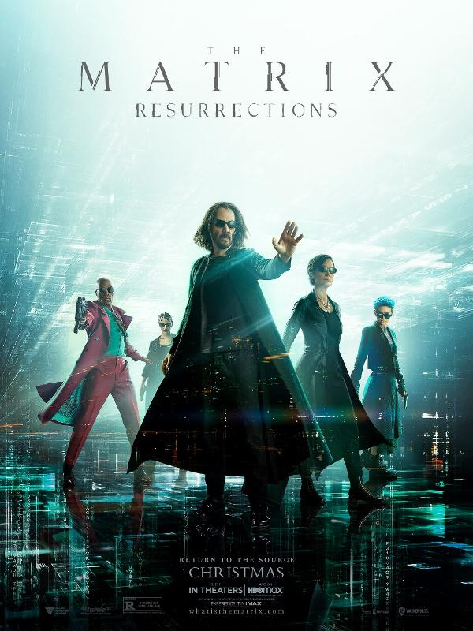

Confira nossa programação abaixo
| Filme |
Classificação Indicativa |
Sobre |
Diretor(es) |
Dia |
|  |
Gente Grande 1 (2010) e Gente Grande 2 (2013) |
Não recomendado para menores de 12 anos |
Em Gente Grande, Lenny (Adam Sandler), Kurt (Chris Rock), Eric (Kevin James), Marcus (David Spade) e Rob (Rob Schneider) se conhecem desde pequenos. Passados trinta anos, os cinco amigos se reencontram para curtir um fim de semana juntos com as respectivas famílias, mas o feriado de 4 de Julho em uma casa no lago promete muito mais diversão do que apenas lembranças dos bons momentos. Casados e com várias crianças, os homens de família terão de confrontar o fato de não serem mais tão jovens. |
Dennis Dugan |
19/12/2021 |
 |
Um Lugar Silencioso 1 (2018) e Um Lugar Silencioso 2 (2021) |
Não recomendado para menores de 14 anos |
Em uma fazenda nos Estados Unidos, uma família do Meio-Oeste é perseguida por uma entidade fantasmagórica assustadora. Para se protegerem, eles devem permanecer em silêncio absoluto, a qualquer custo, pois o perigo é ativado pela percepção do som. |
John Krasinski |
18/12/2021 |
| Sessão Extra-Oficial |
| Filme |
Classificação Indicativa |
Sobre |
Diretor(es) |
Dia |
|  |
Click (2006) |
Livre para todos os públicos |
Um arquiteto casado e com filhos está cada vez mais frustrado por passar a maior parte de seu tempo trabalhando. Um dia, ele encontra um inventor excêntrico que lhe dá um controle remoto universal, com capacidade de acelerar o tempo. No início, ele usa o aparelho para acelerar qualquer momento tedioso, mas se dá conta de que está acelerando o tempo demais e deixando de viver preciosos momentos em família. Desesperado, ele procura o inventor para ajudá-lo a reverter o que fez. |
Frank Coraci |
17/12/2021 |